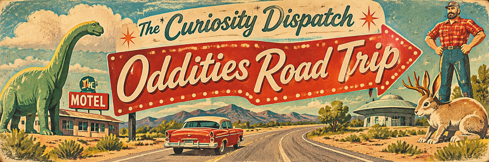

The Oddities Road Trip

Issue No. 001 · Georgia & beyond
Take the weird way around.
Collect places you want to visit, stamp the ones you've seen, and let the Surprise Me button choose your next detour. A growing field guide, not a real-time directory: check admission, hours, accessibility, and current access before setting out.
Postcards from the peculiar
✦ Souvenir-book rules: Your wishlist and visited stamps are saved in this browser. These are destination ideas, not live opening-hour or ticket confirmations. Map links open a search for each location.
Postcards from the mountains ✷
A little Appalachian summer-camp atmosphere for the next detour.